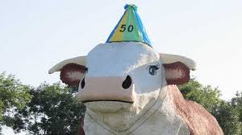
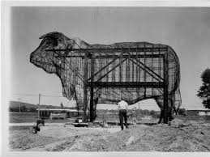

Visit Iowa
World's Largest Bull

Iowa is home to the world's largest bull, Albert, being 30 feet tall and 45 tons. Albert lives in Audubon, where he has stood since 1964, watching over the townspeople. Albert's grand stature invites thousands to come gaze at his elegance, and his splendor has spread across the country, having been featured on Jeopardy and in the hit movie "Beethoven's 3rd," with a 4.1/10 rating on IMDB and 0% on Rotten Tomatoes. With this in mind, it can be said that Albert's standards are only that of the utmost standard. Built in 1964, Albert is a tribute to Iowa's cattle industry, in which the people of Iowa thought it would be best fit to build a statue of a bull the height of four Shaquille O'Neals or a three story building. This was a part of a larger plan to promote the region's cattle industry, otherwise known as "Operation T-Bone." Throughout his life, Albert has not been free from scandal, in which he was originally painted with blue eyes, rather than the brown eyes of a real bull, to the dismay of local farmers. After years of protest, Albert's eyes have been changed to match those of a real bull. Albert has declined to comment on this matter.
Additional Images

